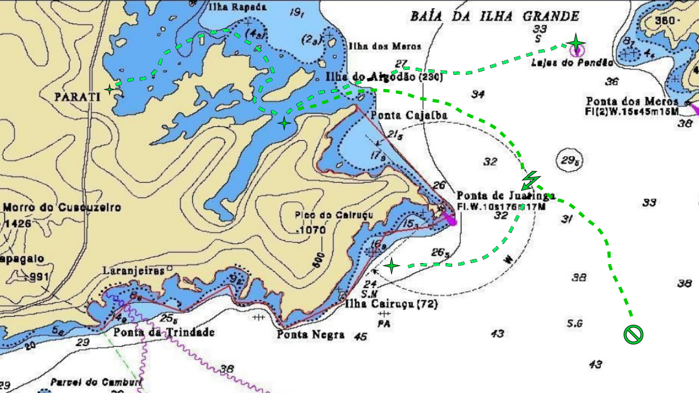

Pescadores
Apresentação
Vocês
são pescadores da colônia de pesca de Paraty. Esta é uma vila
tranquila, no sul do Estado do Rio de Janeiro. O pescado é farto,
mas nos pontos onde há mais peixes também há perigos no mar. Nos
pontos onde a pesca é mais frequente, é preciso evitar a
sobre-pesca, garantindo que os peixes se reproduzam.
O
dia a dia consiste em preparar os barcos para a pesca e sair para o
mar. Para os pontos mais distantes, ou se a pesca for pouca, o barco
pode ficar vários dias no mar. Na volta, o peixe é vendido no
mercado, e o dinheiro arrecadado pode ser usado para comprar rações,
equipamentos ou fazer cursos de aprimoramento.
Pontos
de pesca e outras rotas:
Ilha
do Algodão - Ponto mais próximo, a uma jornada da vila. O
caminho é seguro, mas a pesca rende peixes pequenos, e em pouca
quantidade, por causa da sobre-pesca.
Lages
do Pendão - A duas jornadas da vila, passando pela Ilha do
Algodão. A pesca rende bem, mas há ventos no caminho de volta, que
podem causar atrasos.
Ponta
da Juatinga - Caminho para a Ilha Cairuçu e para o alto mar. É
área perigosa, sujeita a tempestades fortes e mar batido. Há
perigos de perda do pescado e naufrágio.
Ilha
do Cairuçu - Ponto de pesca muito bom, a três jornadas da vila.
Cuidado com a quantidade de pesca na volta, por conta da passagem
pela Ponta da Juatinga.
Alto
mar - A sudeste da ponta da Juatinga, a profundidade é grande,
as ondas são altas, e há perigos desconhecidos. Será que há
grandes cardumes que compensem os riscos?
Personagens:
Os
personagens são os próprios jogadores. Os atributos são: destreza
na pesca e destreza de navegação. Os personagens acumulam destreza
conforme fazem cursos de aprimoramento, que custam dinheiro, conforme
tabela. Cada personagem consome uma ração por jornada. O preço das
rações varia diariamente, conforme a oferta e demanda no mercado.
Barcos:
Para
sair para pescar, os pescadores precisam de barcos. As
características dos barcos são a lotação (número de
tripulantes), capacidade de carga (peso de pescado), e resistência
do casco, que é uma vantagem na hora das tempestades. Os barcos
podem sofrer danos, que reduzem a sua resistência até que sejam
reparados. Os barcos têm um custo, conforme a tabela do fabricante.
Regras:
-
No início do jogo, cada pescador recebe R$2000,00, que devem ser
alocados entre a compra do barco, redes, rações e aprimoramentos.
Fica a opção de um barco poder ser comprado em sociedade.
-
O jogo se passa em jornadas (um período de atividades). A cada
jornada, cada pescador consome 1 ração.
-
Antes de sair da vila, é preciso equipar o barco e tripulação com
rações suficientes para a jornada de ida e de volta, incluindo
provisão para jornadas perdidas em tempestades e ventos fortes. No
equipamento do barco também vão as redes de pesca. Sem elas, não é
possível pescar.
-
A cada jornada, é possível se deslocar a um ponto adjacente no
mapa, permanecer e pescar (nos pontos de pesca), ou trabalhar na
vila. Durante o deslocamento, pode haver ventanias e tempestades. A
pesca e eventos envolvendo riscos são reguladas pelo item Eventos.
-
A cada jornada em um ponto de pesca, pode-se jogar as redes (uma vez
para cada rede no barco), e o resultado depende da destreza dos
pescadores e qualidade do ponto. O resultado determina a quantidade
de peixe pescada. Para resultados maus, pode haver danos nas redes,
ou mesmo a perda das mesmas. A quantidade de pescado não pode
exceder a capacidade do barco.
-
Em barcos com mais de um pescador, a destreza (de pesca, navegação,
etc.) é calculada somando o valor das destrezas individuais.
-
Após cada jornada, o painel do jornal fica disponível para consulta
e edição, quando os pescadores odem descrever com mais detalhes o
acontecido, respondendo a perguntas como: O que aconteceu na
tempestade? Como foi a pescaria?
-
Ao retornar à vila, ou ao chegar em um ponto de comércio, o pescado
pode ser vendido no mercado. O valor obtido pode depender do dia, e
da destreza de negociação dos pescadores (possível variação do
jogo). A forma de partilha do resultado depende de negociação no
início da viagem (percentual de cada um, custo da diária do barco,
valor fixo por quilo de peixe pescado, pagamento de diária, etc...).
A partilha é realizada manualmente na tela de transferências. Esta
tela também pode ser utilizada para empréstimos ou sociedades, por
exemplo, para compra de um barco maior.
-
Quando o pescador está na vila, ou outro ponto de comércio, antes
do início da jornada, ele pode vender ou alugar outros bens, e usar
seu dinheiro para comprar ração no mercado, compra de equipamentos
ou para aprimoramentos em pesca e navegação. Só pode ser feito um
curso de aprimoramento por estadia em terra, e há um limite de 12
rações que podem ser mantidas por um pescador. Ver tabelas de
custos.
-
Se um barco naufraga ou se as rações dos pescadores acabam, eles
são resgatados, e voltam para a vila, mas perdem o barco e as redes
que estavam no barco, no primeiro caso, ou o pescado, no segundo. O
dinheiro que tenham acumulado pode ser usado para comprar novos
equipamentos. Se não tiverem o suficiente, podem sair nos barcos de
outros pescadores, ou trabalhar na vila, recebendo um pagamento por
cada jornada. Os pescadores que ficam em terra continuam consumindo
rações.
-
Dentre as variações possíveis, pode haver empresas que alugam o
barco, ou que mantém o peixe em frigorífico, a um custo por
jornada/quilo. Também pode haver consultas ao serviço
meteorológico, para determinar a probabilidade de tempestades. Outra
possibilidade é que nas tempestades a resistência do barco seja
reduzida conforme os danos. Se chegar a zero, o barco naufraga.
Pode-se, então, criar um serviço de manutenção, que restaura o
barco a um certo custo.
Eventos:
A
cada jornada de deslocamento, conforme um sorteio, nos locais
sujeitos a perigos e nos pontos de pesca, podem ocorrer os seguintes
eventos:
-
Voltando das Lages do Pendão, sempre há ventos fortes. Ocorre um
teste de destreza de navegação, com dificuldade 5. Em caso de danos
leves, atraso de 1 jornada. Em caso de danos graves, atraso de 2
jornadas. Os atrasos são contados em jornadas perdidas, em que o
barco não muda de posição e não se pode pescar, mas as rações
são consumidas.
-
Na ponta da Juatinga, tanto na ida quanto na volta, pode haver
tempestades. Ocorre um teste de probabilidade de intempérie, com
dificuldade 4 (2/3 de chances de ocorrer). Se a tempestade ocorrer,
ocorre um teste de destreza de navegação, com dificuldade 7. Em
caso de danos leves, há perda de 50% do pescado. Em caso de danos
graves, naufrágio.
-
Em alto mar, ocorrem tempestades. com a dificuldade sorteada no dado
(ou a critério do mestre). A interpretação pode ser a mesma que no
caso das tempestades acima.
-
Outros eventos, pontos de pesca, navegação e comércio podem ser
criados pelo mestre do jogo, juntamente com a interpretação dos
resultados dos testes.
Nas
jornadas de pesca, os pescadores no barco podem jogar suas redes,
limitado a dois lançamentos por jornada. A quantidade de pescado
resultante depende de testes de destreza na pesca e da
dificuldade/rendimento do ponto. Se o teste resultar em perda leve, a
rede retorna vazia. Se ocorrer perda grave, uma das redes é perdida
(a do pescador com menor destreza na pesca).
-
Na Ilha do Algodão, a dificuldade é 3, e o rendimento é de até
50kg por rede. Por haver problemas de sobrepesca neste local, se mais
de um barco pescar no local na mesma jornada, são descontados 10Kg
do pescado para cada barco (a implementar).
-
Nas Lajes do Pendão, a dificuldade é 4, e o rendimento, de até
100Kg.
-
Na Ilha do Cairuçu, a dificuldade é 3, e o rendimendo de até
150Kg.
-
Em alto mar, a dificuldade deve ser sorteada com o dado, sendo que 6
indica que não há peixes. O rendimento é de até 250Kg.
Testes
de Destreza
Os
testes de testreza estão automatizados no jogo em computador. Para o
jogo manual, segue o procedimento a adotar para cada tipo.
Teste
de destreza de navegação:
Lançar
um dado (1D6). Se o resultado for 1, houve danos leves. Senão, somar
com a destreza de navegação e a resistência do barco. Se o
resultado for igual ou superior à dificuldade somada com os danos
pré-existentes ao barco, houve sucesso. Até dois pontos abaixo,
danos leves. Mais de dois pontos abaixo, danos graves.
Teste
de pesca:
Lançar um dado (1D6). Se o
resultado for 1, não veio peixe na rede. Senão, somar com a
destreza de pesca de todos os pescadores no barco. Se o resultado for
superior à dificuldade, multiplicar os pontos excedentes por 20%
para determinar a quantidade de pescado, limitada a 100%. Se o
resultado ficar dois pontos ou mais abaixo da dificuldade, foi
perdida uma rede no lançamento. Senão, se ficar igual ou abaixo da
dificuldade, a rede retornou vazia (sem peixes).
Tabelas de preços:
Barcos:
|
Tipo
|
Lotação
|
Capacidade
|
Resistência
|
Preço
|
|
Barco Simples
|
1
|
150Kg
|
1
|
R$1.000,00
|
|
Barco Reforçado
|
2
|
400Kg
|
3
|
R$2.000,00
|
Na
venda de um barco usado, o fabricante paga 70% do valor do modelo
novo. O pescador pode negociar com outros a venda do seu barco por
outros valores.
Uma
locadora aluga barcos com seguro por 20% do preço de um novo para
cada viagem, com a condição de que o barco alugado não passe da
Ponta da Juatinga, onde os perigos aumentam.
Reparo
de barco: R$200,00 para cada unidade de dano a reparar.
Rede:
R$300,00
Ração:
de R$10,00 a R$20,00 por dia, conforme o mercado ($R8,00 + R$2,00 *
1D6)
Pescado:
R$5,00 a R$15,00 por quilo, conforme o mercado (R$3,00 + R$2,00 *
1D6)
Jornada
em terra: R$30,00.
Cursos
de aprimoramento:
Destreza
0 - Valor inicial para todos.
Destreza
1 - R$200,00
Destreza
2 - R$500,00 - pré-requisito: Destreza 1
Destreza
3 - R$800,00 - pré-requisito: Destreza 2
Mapa
da área de pesca:

Notas
Esta
obra foi ambientada em um cenário geográfico real, para que a
narrativa se torne mais verossímil, mas tudo o mais é ficção, de
forma que as características dos pontos de pesca e navegação,
assim como os preços de produtos e serviços podem não corresponder
com a realidade.
O tema
escolhido foi a vida em uma colônia de pescadores, mas o jogo
poderia ser facilmente alterado para retratar a vida de
caminhoneiros, agricultores, etc. Acreditamos que o jogo ajude os
participantes a entender melhor os temas de planejamento financeiro,
empreendedorismo, avaliação de riscos, cooperação e ecologia.
Além disso, na versão de mesa, são exercitadas as habilidades com
aritmética simples e criatividade.
As
idéias originais foram aprimoradas a partir de sugestões de
voluntários que trabalham na FENASE - Ivan Wermelinger e Rodrigo
Machado, a quem agradecemos pela colaboração.
Instalação
Após
expandir o pacote do produto em um diretório, edite o arquivo
executar.bat ou executar.sh, conforme seu Sistema Operacional, para
mudar o diretório corrente para o diretório onde foi instalado o
produto. Se você pretende compartilhar o uso do programa com outros
usuários, sugerimos que o diretório de instalação fique em
C:\Public\Documents\ para Windows, ou /usr/share/ para Linux. Este
programa foi escrito em Python, e você vai precisar que o mesmo
esteja instalado em seu sistema. Procure em https://www.python.org
a versão mais apropriada para seu sistema. Adicione um atalho ou
opção de menu apontando para o arquivo executar.bat ou executar.sh,
conforme o procedimento indicado para o seu sistema operacional.
Licença
de Uso
Este
trabalho foi originalmente criado por João Alexandre Vianna
(jvianna@gmail.com) e está
licenciado sob a Licença Attribution-NonCommercial-ShareAlike 4.0
International Creative
Commons. Para ver uma
cópia desta licença, visite
http://creativecommons.org/licenses/by-nc-sa/4.0/
ou mande uma carta para Creative Commons, PO Box 1866, Mountain View,
CA 94042, USA.
Veja
um sumário dos termos da licença (não substitui o texto original,
no site indicado acima):
Você tem o direito de:
Compartilhar
— copiar
e redistribuir o material em qualquer suporte ou formato;
Adaptar
— misturar,
transformar, e criar a partir do material;
De
acordo com os termos seguintes:
Atribuição
— Você
deve dar o crédito
apropriado, prover um link para a licença e indicar
se mudanças foram feitas. Você deve fazê-lo em qualquer
circunstância razoável, mas de maneira alguma que sugira ao
licenciante a apoiar você ou o seu uso.
Não
Comercial — Você
não pode usar o material para fins
comerciais.
Compartilha
Igual — Se
você remixar, transformar, ou criar a partir do material, tem de
distribuir as suas contribuições sob a mesma
licença que o original.
Sem
restrições adicionais — Você
não pode aplicar termos jurídicos ou medidas
de caráter tecnológico que restrinjam legalmente outros de
fazerem algo que a licença permita.
Avisos:
Você
não tem de cumprir com os termos da licença relativamente a
elementos do material que estejam no domínio público ou cuja
utilização seja permitida por uma exceção
ou limitação que seja aplicável.
Não
são dadas quaisquer garantias. A licença pode não lhe dar
todas as autorizações necessárias para o uso pretendido. Por
exemplo, outros direitos, tais como direitos
de imagem, de privacidade ou direitos morais, podem limitar o
uso do material.
Saiba
mais
sobre
licenciamento CC
(Creative Commons), ou use
a
licença
para seu
próprio material.
Esta
página está disponível nas seguintes línguas:
Bahasa
Indonesia Bahasa
Malaysia Castellano
Castellano
(España) Català
Dansk
Deutsch
English
Esperanto
français
Galego
hrvatski
Italiano
Latviski
Lietuvių
Magyar
Nederlands
norsk
polski
Português
Português
(BR) română
Slovenščina
suomeksi
svenska
Türkçe
íslenska
čeština
Ελληνικά
Беларуская
русский
українська
العربية
پارسی
বাংলা
中文
日本語
華語
(台灣)
한국어
{kind=link}